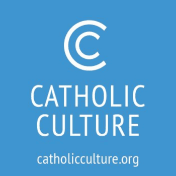
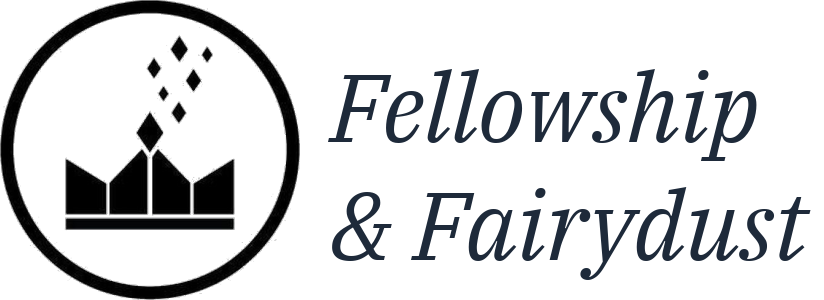

Catholic Scholar & Consultant
Andrew Robert Likoudis
Scholarship, publishing, and consulting in service of Church unity and renewal.
Founder, Likoudis Legacy Foundation · Editor, Faith in Crisis · M.A., Franciscan University


Andrew Robert Likoudis
Andrew Likoudis is a Catholic scholar working in ecclesiology, ecumenism, and liturgy, with an M.A. in Catholic Studies from Franciscan University of Steubenville. He organized and edited Faith in Crisis (En Route, 2025), a 40-chapter volume with a foreword by Rocco Buttiglione, praised in Word on Fire’s Evangelization & Culture journal as “an impressive labor of love.”
His recent editorial work includes the fiftieth-anniversary edition of Yves Congar’s Challenge to the Church (En Route, 2026) and the third edition of Ending the Byzantine Greek Schism (Emmaus Road, 2026), with a foreword by Scott Hahn. Founder and president of the Likoudis Legacy Foundation, he directs its journal The Kydones Review and writes at Tradition & Renewal on Substack.
His writing has also appeared at Philosophy Now, the National Catholic Register, Fellowship & Fairydust Magazine, Catholic Review, and Where Peter Is. He provides consulting, research, organizational strategy, and communications services to Catholic publishers, nonprofits, and institutions.

“Andrew Likoudis is a gifted young Catholic editor and organizer whose commitment to the Church’s mission is matched by his personal affability. He is the kind of collaborator the Church needs more of.”
Dr. Anne DeSantis, ThD
Executive Director, St. Raymond Nonnatus Foundation; Author, The Virtue of Affability
Featured Book
Faith in Crisis
Critical Dialogues in Catholic Traditionalism, Church Authority, and Reform
Featuring Robert Cardinal Sarah, Mike Aquilina, Jimmy Akin, Timothy O'Malley, and 30+ contributors, with a foreword by Rocco Buttiglione and an imprimatur from Archbishop William E. Lori.

New & Forthcoming
Two New Books
A new chapbook on indefectibility and dissent, and the first English edition of Yves Congar’s answer to the Lefebvre crisis — both from En Route Books.

To His Face
Indefectibility & the Problem of Dissent
Andrew Likoudis · Foreword by Robert Fastiggi · Afterword by Emmett O'Regan
Learn More →Challenge to the Church
The Case of Archbishop Lefebvre
Yves Congar, OP · Foreword by Larry Chapp · Trans. Paul Inwood · Edited & introduced by Andrew Likoudis
Learn More →Published In
Also featured at
Featured Articles
“Who is the Orestes Brownson of our era? Working at the increasingly fluid intersection of theology and journalism, Andrew Likoudis has distinctively construed and defended Pope Francis’s vision, including as it is being carried forward by Pope Leo XIV.”
Matthew Levering, Ph.D.
James N. Jr. and Mary D. Perry Chair of Theology, Mundelein Seminary
Ordinary Member, Pontifical Academy of Saint Thomas Aquinas
Invite Andrew to Speak
Andrew speaks at parishes, conferences, and universities on ecumenism, Church authority, ressourcement theology, and the path to Christian unity — from parish formation evenings to academic keynotes.
Parish Formation
Adult-education evenings and parish missions on the liturgy and the reform, discerning apparition and private-revelation claims, and understanding the traditionalist moment with clarity and charity.
Conferences & Keynotes
Plenary and breakout talks on East-West ecumenism and the road to reunion, the crisis of authority behind the traditionalist turn, and clericalism in the contemporary Church.
Universities & Seminaries
Lectures and seminars on ressourcement theology and the nature–grace debate, the history of the liturgical reform, Catholic anthropology in an age of AI, and the ecclesiology of the schism.
Consulting
“Andrew was a thoughtful and dependable collaborator. He took initiative, engaged seriously with the work, and consistently delivered quality research and analysis.”
Rick Little
Principal, Julep Consulting
Notable Encounters
What I’m Reading
A working list, updated when something sticks.
Dispatches
From Tradition & Renewal
Essays on faith, culture, and the Church — new most weeks.